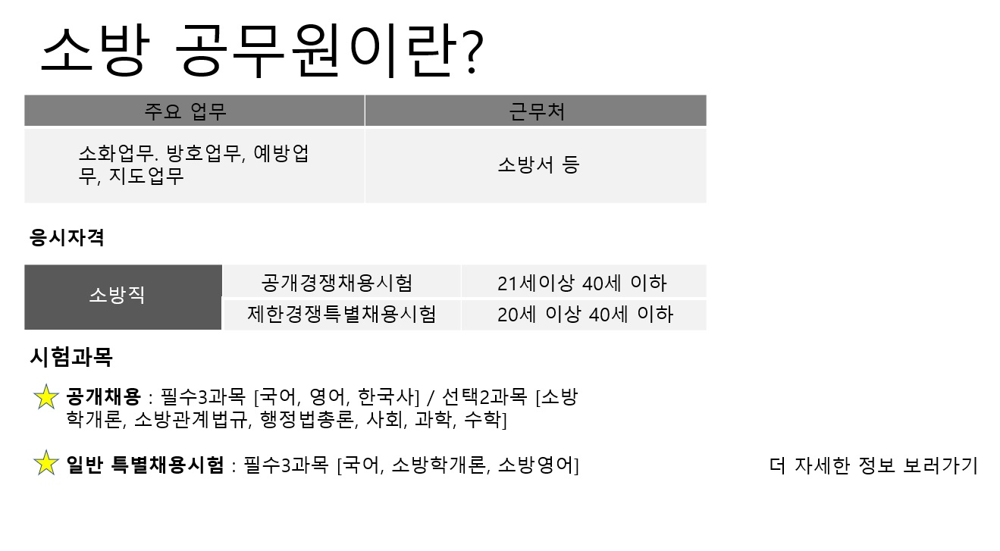
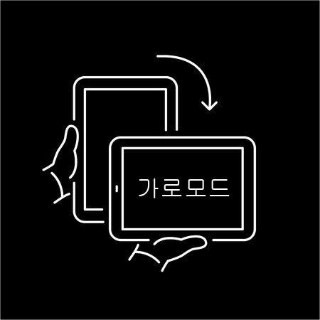
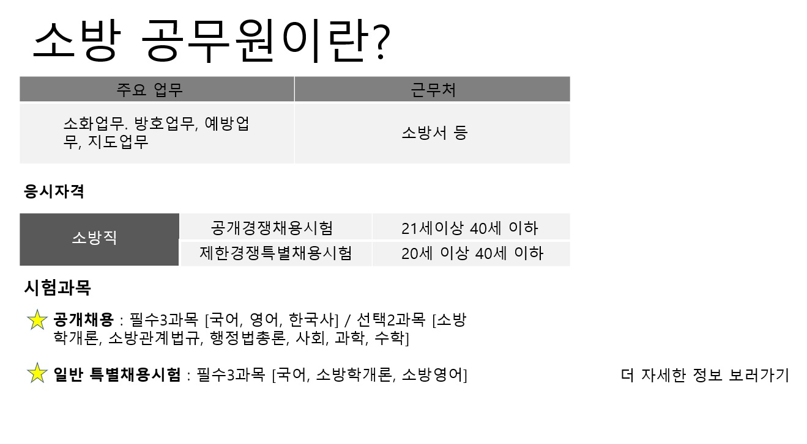
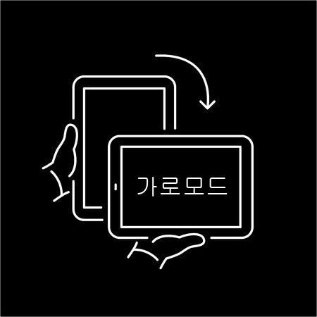
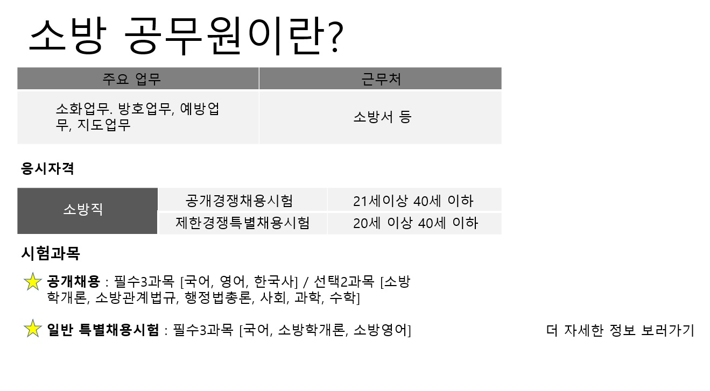
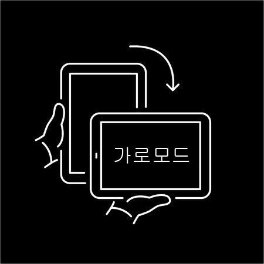
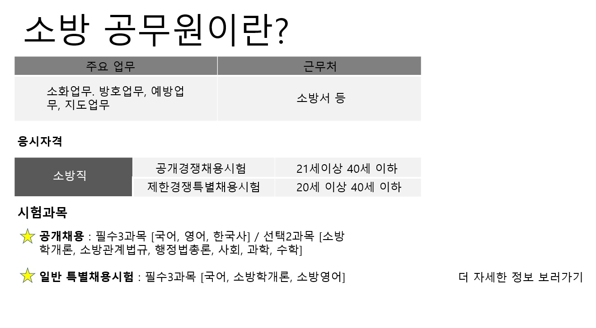
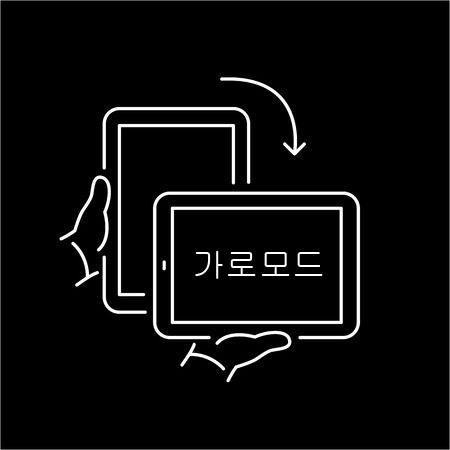

15
50
 



Score : 0
Stage 1
안녕하세요 당신은 화재 및 재난, 재해를 예방하고 대응하며 위급한 상황으로 부터 구조 구급활동을 통해 국민의 재산과 신체를 보호하는 것을 주임무로 하는 소방관입니다. 여러분은 지금부터 소방관의 하루를 체험하게 됩니다. 상황에 맞는 선택지를 선택하여 재밌는 체험을 해보시길 바랍니다.
3/3
 



3/3
▸ 차에서 내릴 때에는 주위상황을 확인한다.
▸ 차량이 정차하기 전에 급하게 문을 열고 내리지 않도록 한다.
▸ 여러개의 호스가 동시에 내부로 전개될 경우 각 호스별로 구분이 가능한 표식을 해 두면 매우 효과적이다.
▸ 결합구(Coupling)나 관창(Nozzle)이 땅에 떨어지지 않도록 하고 호스 상태에 주의하여 꼬이지 않도록 전개한다.
▸ 사다리는 유리창의 전면, 창문샤시, 화분받침대 또는 무너질 수 있는 표면에는 절대 설치하지 않는다.
▸ 사다리를 설치할 때는 반드시 견고하고 평평한 바닥에 설치하고 반드시 아래쪽에서 1인이 지지하여야 한다.
▸ 안전담당자는 진입 자를 최소한의 필수인원으로 통제하고 끊임없이 진입자의 이상 유무를 확인한다.
▸ 진입할 때에는 반드시 공기호흡기를 장착하고 안면마스크를 착용한다.